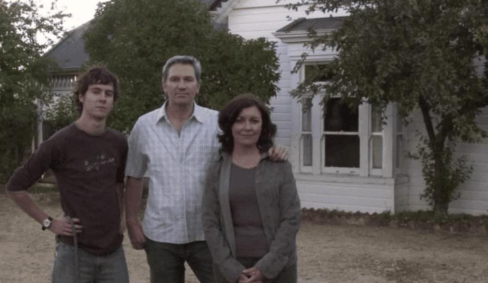
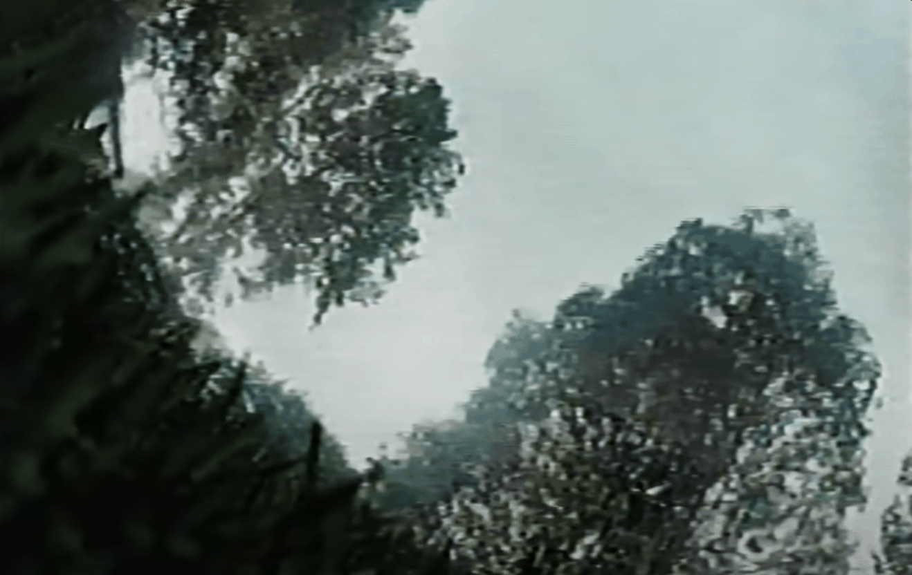

SAT Film Folio
Home
Research & Development Task
Production Experiments
Media Form
Genre
Style
Bibliography
Style
Added when the site was rebuilt
Images only: the written work for this page was not saved. 14 images.


← Genre
Bibliography →